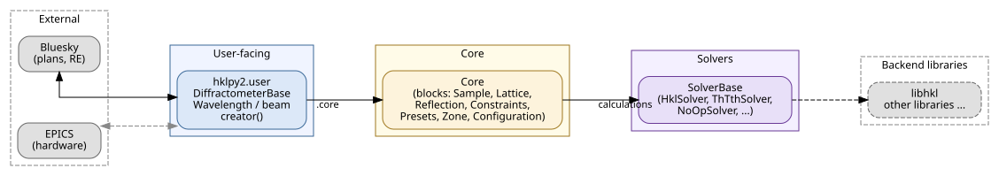

Architecture & Design Decisions#
This page describes the architectural decisions behind hklpy2 — why the package is structured the way it is, and where it is headed.
Package Architecture#

The package is organised into five sections, flowing left to right:
External (left) — Bluesky plans (RunEngine,
bps.mv, …) drive the diffractometer; EPICS provides real motor axes and optional PV-based wavelength control. These are external to hklpy2 and shown with dashed borders.User-facing —
DiffractometerBase(an ophydPseudoPositioner),WavelengthBase, thecreator()factory, and thehklpy2.userconvenience functions (pa(),wh(),cahkl(),setor(), …).Core —
Coremanages the seven block classes (Sample,Lattice,Reflection,ConstraintBase, Presets,OrthonormalZone,Configuration) and acts as the single point of contact between the diffractometer and its solver.Solvers —
SolverBasedefines the adapter interface; built-in solvers (HklSolver,ThTthSolver,NoOpSolver) and additional solvers registered via Python entry points all subclass it.Backend libraries (right) — the third-party libraries that solvers delegate the heavy mathematics to (e.g. Hkl/Soleil). Like the external section on the left, these are outside hklpy2 and shown with dashed borders.
See Package Architecture for detailed diagrams of each layer.
Design Goals#
Why a new package?#
Two specific user requests made it clear that incrementally patching hklpy v1 was not viable.
The first was named reflections. In v1, reflection storage was delegated entirely to the backend library (Hkl/Soleil). Adding user-visible names to reflections would have required a deep refactor of every layer that touched the backend — a change so invasive it would have broken the existing API throughout.
The second was wavelength handling. A review of how v1 managed (and failed to manage) wavelength revealed that the tight coupling to Hkl/Soleil made it impossible to support replaceable solver backends without rebuilding the package from scratch. Wavelength is a property of the beam, not of the solver, and v1 had no clean way to express that separation.
Together these two issues confirmed that the goal of replaceable solvers — the central design requirement of v2 — could not be achieved by refactoring v1. A new code base, with reflection management and wavelength control owned by Python rather than delegated to the backend, was the only path forward.
What changed#
The redesign from hklpy v1 to hklpy2 v2 addressed these shortcomings:
hklpy v1 |
hklpy2 v2 |
|---|---|
Depends on Hkl/Soleil (Linux x86-64 only) |
Hkl/Soleil is one optional backend solver |
All samples, lattices, reflections stored inside Hkl/Soleil |
Samples, lattices, reflections stored in Python |
Multiple confusing layers mirroring Hkl/Soleil internals |
Two clear layers: Core and Solver |
Difficult to add geometries or swap backends |
Solvers are plugins, swappable at runtime |
Difficult to use additional axes or parameters |
Extra axes and parameters are first-class |
No standard save/restore |
Configuration block handles save/restore |
Coordinate Systems#
hklpy2 works in two coordinate spaces simultaneously:
Real space — the physical rotation angles of the diffractometer motors
(e.g. omega, chi, phi, tth). These are the real axes. Their
names and order are defined by the diffractometer geometry provided by the
solver.
Reciprocal space — the crystallographic Miller indices \((h, k, l)\)
that identify planes in the crystal lattice. These are the pseudo axes.
While Miller indices are conventionally integers, the pseudo axes in
hklpy2 are floating-point values, allowing positions between Bragg peaks
(e.g. for continuous scanning along a reciprocal-space trajectory, diffuse
scattering, or incommensurate structures).
DiffractometerBase converts between the two spaces
via forward() (hkl → angles) and
inverse() (angles → hkl), delegating
the mathematics to Core and then to the solver.
The UB matrix#
The conversion between the two spaces requires knowing both the crystal geometry and its orientation on the diffractometer. This is encoded in the \(UB\) orientation matrix, which is the product of two matrices:
\(B\) — encodes the crystal lattice geometry (lengths and angles of the unit cell). It transforms the sample’s Miller indices \((h, k, l)\) into the diffractometer’s reference frame (technically, to an orthonormal Cartesian basis aligned with the crystal axes).
\(U\) — encodes how the crystal is physically mounted on the diffractometer sample holder. It transforms from the diffractometer’s reference frame into the laboratory reference frame (technically, a rotation matrix from the crystal Cartesian frame to the reciprocal lab frame).
\(UB\) — the product of \(U\) and \(B\); the single matrix used in all
forward()andinverse()calculations to convert between Miller indices and diffractometer angles.
\(UB\) is computed from two or more measured orientation reflections —
positions where the diffractometer angles and the corresponding \((h, k, l)\) are both known. See calc_UB() and
calc_UB().
See issue issue #192 for an open discussion on reconsidering coordinate system transformations.
Solver Plugin Design#
A solver is a Python class that subclasses
SolverBase and is registered
with the "hklpy2.solver" entry-point group in its package metadata. This
allows solvers to be installed independently and discovered at runtime without
modifying hklpy2 itself.
# pyproject.toml of a solver package
[project.entry-points."hklpy2.solver"]
my_solver = "my_package.solver:MySolver"
Built-in solvers shipped with hklpy2:
Solver |
Backend |
Notes |
|---|---|---|
|
Linux x86-64 only; many geometry types |
|
|
pure Python |
Any OS; θ/2θ geometry with Q pseudo axis |
|
none |
Testing only; no useful geometries |
See How to write a new Solver for how to write and register a new solver.
Future Plans#
The following design-level topics are under active consideration. Each links to the tracking issue for discussion and status.
Multiple solvers per diffractometer (issue #187)
: Allow a single DiffractometerBase instance to switch between solvers at
runtime without reconstruction, enabling side-by-side comparison of
backends.
Performance targets (issue #221, issue #223)
: Minimum throughput of 2,000 forward()
and inverse() operations per second.
Coordinate system reconsideration (issue #192) : Review whether the current \(UB\) convention and axis ordering are the best defaults for all supported geometries.
Analyzers and polarizers (issue #222) : Support for additional optical elements as stand-alone ophyd objects that coordinate with the diffractometer.
Fly scanning (issue #11) : Built-in reciprocal-space fly-scan plans integrated with the Bluesky RunEngine.